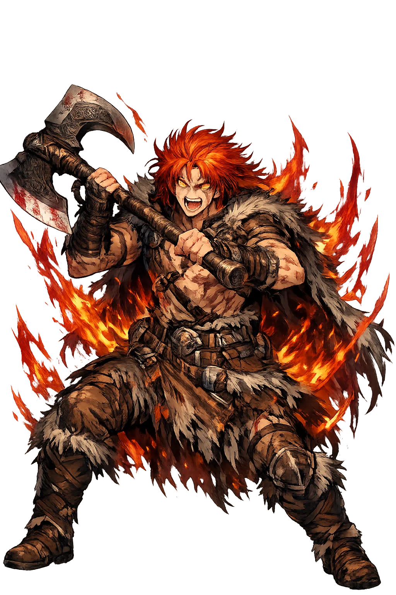
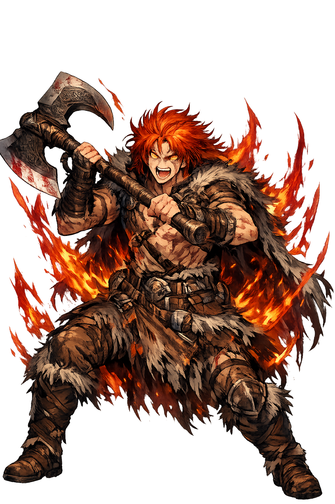

Unicode restoration and ASCII comparison
ᛘᚢᚦᛁ
The name in its original Norse form. Móði (ᛘᚢᚦᛁ) is attested in the source tradition — “The angry one”. Its acute stress marks carry the full phonetic and orthographic weight of the source tradition.
modi
Reduced to plain modi, the name loses everything that made it specific: acute stress marks. What remains is an ASCII string that machines can parse but that no longer speaks with its original voice.
Móði
The Unicode restoration recovers what ASCII flattened. Móði restores acute stress marks, returning the name to its original written dignity. The domain encodes to Punycode, but the browser displays the truth.
Móði.com → xn--mi-wjal.com
The non-ASCII characters in Móði are encoded while the ASCII remains visible. To the DNS, it is Punycode. To humanity, it is Móði.
How Móði travels from ancient script to the modern URL
How Móði was spoken
The Angry God and Survivor of Ragnarök
Móði is the son of Þórr, the personification of wrath and courage. He appears in only a handful of passages, yet his role is consequential: he survives Ragnarök alongside his brother Magni and inherits their father's hammer Mjölnir. Where Magni is 'mighty,' Móði is 'fierce' — the emotional force that drives the thunder-god's line forward into the new world.
His name is the Old Norse word for fierce courage and battle-fury.
Born of the thunder-god and the giantess Járnsaxa in the Prose Edda.
He and Magni live through the twilight to inherit the renewed earth.
After Þórr falls to the serpent, Móði receives the hammer.
Stories of Móði
Móði is not a god of independent myths. His significance lies entirely in his relationship to Þórr and in what he represents for the future after Ragnarök. He is the angry courage that outlives the old gods.
Völuspá prophesies that after Ragnarök, a few gods will survive to people the renewed world: Víðarr, Váli, Baldr, Höðr, and the sons of Þórr, Magni and Móði. They will inherit Mjölnir and the memory of their father's battles. Móði's survival means that Þórr's line does not end in the serpent's venom.
After Þórr kills the giant Hrungnir, the giant's leg falls across Þórr's neck and pins him to the ground. None of the Æsir can lift it until Magni, Þórr's three-night-old son by Járnsaxa, arrives and flings the leg aside. Móði is named in the same genealogy as Magni's brother, though he does not act in this scene. The story establishes the extraordinary strength of Þórr's giant-born sons.
Snorri lists Móði and Magni as Þórr's sons by Járnsaxa, one of the giantesses. Their names — 'wrath' and 'might' — personify the two aspects of the thunder-god's power. While Magni represents raw strength, Móði represents the fierce emotion that drives it. Together they are the legacy Þórr leaves to the post-Ragnarök world.
Móði is the anger that survives. He does not have his father's epic battles or his brother's astonishing strength; what he has is the fury that keeps going after the world ends. In a pantheon full of larger-than-life actors, he is a small but necessary figure: the emotion that outlives the body.
Enter Extended Lore